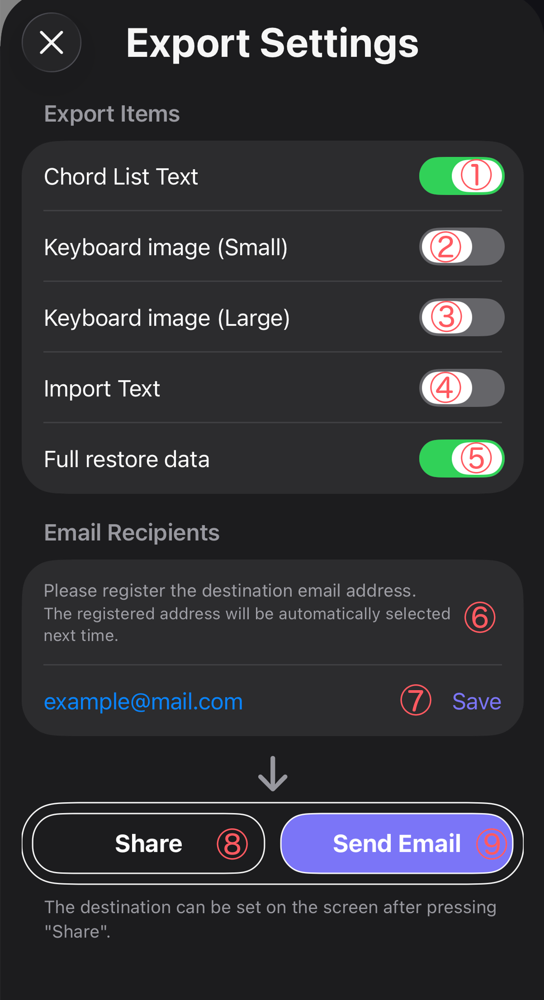

Explains how to send memo pages using email or the share function
Before sending a memo page, you can choose which data to include in the export.
There are two sending methods: Share and Email.
On this screen you can configure the type of data to export, the destination email address, and the sending method.

① Chord List Text
Exports a text list of all chords used in the memo.
② Keyboard Image (Small)
Exports a compact keyboard image.
This allows you to quickly check the chord fingering.
③ Keyboard Image (Large)
Exports a larger keyboard image.
The keyboard display includes on-bass chords.
④ Import Text
Exports the chord progression as text.
This text can be reused with the M-Piano import feature.
⑤ Full Restore Data
Exports the memo page as a .mpmemo file.
Opening this file in M-Piano restores the memo page completely.
⑥ Email Recipients
Register the destination email address.
Saved addresses will be automatically selectable next time.
⑦ Save
Saves the entered email address.
⑧ Share
Sends the data using the iOS share sheet (AirDrop, Messages, other apps, etc.).
⑨ Send Email
Sends the memo directly to the selected email address.
.mpmemo is a dedicated file format used to share memo pages in M-Piano.
When the recipient opens this file, M-Piano launches and imports the memo page.
This makes it easy to share chord progressions with band members or friends.
When using Share, you can choose the destination in the iOS share sheet.
When using Email, the memo is sent directly to the registered address.